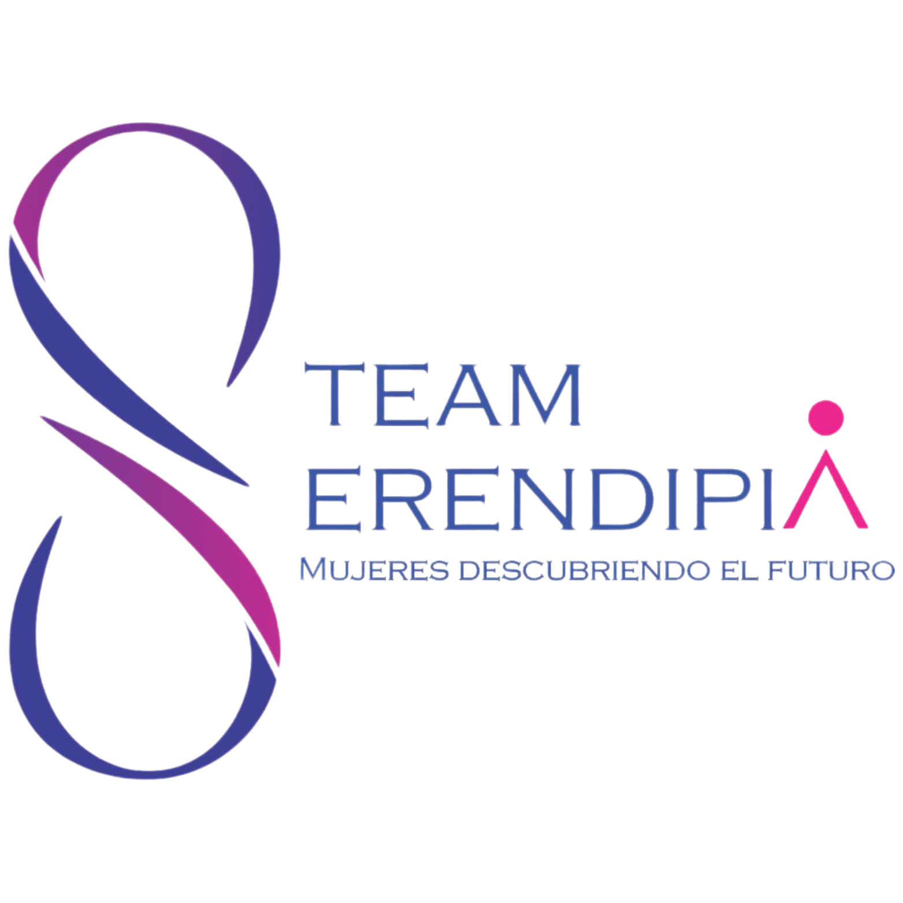

Objetivo
Fortalecer la inclusión de las mujeres en STEAM mediante jornadas que abran mejores e iguales oportunidades, contribuyendo al desarrollo de nuestro país.

STEAM Serendipia es un programa que promueve, fomenta y fortalece la inclusión de las mujeres en las áreas de Ciencia, Tecnología, Ingeniería, Arte y Matemáticas (STEAM).
Fortalecer la inclusión de las mujeres en STEAM mediante jornadas que abran mejores e iguales oportunidades, contribuyendo al desarrollo de nuestro país.
Niñas de 11 a 15 años, acompañadas de un padre, madre o tutor durante las sesiones.
Un taller en línea de 6 semanas con especialistas en cada área, actividades dinámicas y mentoría personalizada para ti y tu familia.
Mujeres expertas e inspiradoras en cada área STEAM.
Cada semana abordamos una de las letras de STEAM.
11 de julio
18 de julio
25 de julio
1 de agosto
8 de agosto
15 de agosto
Conoce nuestras convocatorias y actividades.
Cargando eventos…